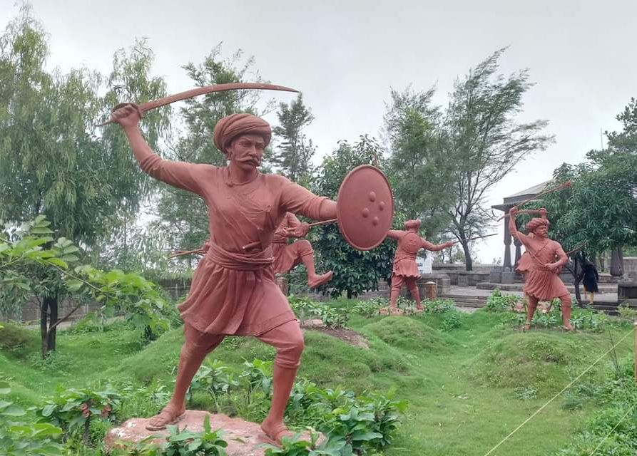
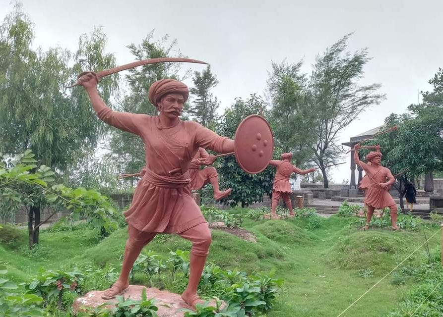

Sinhagad Fort
Sinhagad Fort is an ancient fortress and famous for its historical significance and architecture. It is located in the Sahyadri Mountains and is about 35 km from Pune. Sinhagad Fort is a popular tourist destination around Pune. Sinhagad Fort, Sinhagad, and its surroundings have amazing views with greenery everywhere. The Sinhagad Fort means Lion\'s Fort and was built strategically to provide steep slopes that give it natural protection and located in Sahyadri Mountains. The Sinhagad Fort was also previously known as Kondhana. The fort was captured by the British in the year 1818 AD and it took 3 months for them to conquer such fort. The fortress also displays samadhi of Tanaji Malsure along with the tomb of Shivaji's son, Rajaram.
Take Tour Know More
Raigad Fort
Raigad Fort is a hill fort situated in Mahad, Raigad district of Maharashtra, India. It is one of the strongest fortresses on the Deccan Plateau. Many constructions and structures on Raigad were built by Chhatrapati Shivaji Maharaj and Chief Engineer was Hirojee Indulkar. When Chhatrapati Shivaji Maharaj made it his capital in 1674 upon being crowned the king of the Maratha kingdom, which later developed into the Maratha Empire, eventually covering much of western and central India.
Take Tour Know More
Shivneri Fort
Shivneri is a hill fort located to the northern side of Pune district with Junnar at its base and was the birth place of Chhatrapati Shivaji Maharaj. Even though the fort has succumbed to the ravages brought on by time and weather, its structural style is worth a study. The spot where Chhatrapati Shivaji Maharaj was born was reconstructed in 1925 and is known as the Shiv Mandir. In its vicinity is a huge circular water tank called Badami Talav. However, it does not hold water any longer. At the far side to the north is a precipitous cliff. This narrow channel is known as the Kadelot Point. It is believed that criminals awarded capital punishment were handcuffed and thrown down from here. It is from here that one can get a good view of the Manikdoh Dam as also the forts of Hadsar and Chavand. Climbing further you will be able to see the hill fort of Harishchandragad, far behind the mountains. Some of the other views include those of Narayangad, Lenyadri Hill, Arvi Satellite Centre’s antenna and the Giant Meter wave Radio Telescope (GMRT) at Kodad near Pune.
Take Tour Know MorePratapgad
Pratapgad is famous on for the encounter between Shivaji and the mighty Afzal Khan. It was here that Shivaji’s true reign began after he defeated Khan making this fort one of the most important one in Maratha history. The nearest railhead is Vir Dasgaon. You can drive down from Mumbai to Mahabaleshwar from where Pratapgad is just 24 kms away
Take Tour Know More
Panhala
Panhala Built in the 12th century, Panhala is one of the oldest forts in Maharashtra. Shivaji spent many days here as this fort was under the Maratha reign from the 17th to the mid-18th century. It provides a great view of the pass connecting the rest of Maharashtra with its coastal areas. The nearest railhead is Miraj which is just an hour away from Kolhapur. You can drive to Panhala from Kolhapur which falls on the Pune-Bangalore route.
Take Tour Know More
Rajgad
Rajgad fort where Shivaji spent 24 years of his life, the formidable Rajgad fort is known for its amazing design. It served as Shivaji’s capital until 1672 CE. Today, it is popular among trekkers for the spectacular views of the Sahyadri ranges from atop. The nearest railhead to reach Rajgad fort is Pune, from where it is an easy 56 kms drive.
Take Tour Know MoreLohagad
Lohagad was significant to the Marathas mainly due to its strategic location. It was from here that the trade route through Bor ghat (now known as the Khandala ghat) was guarded. Today, it is a popular trekking destination for Mumbaikars and Puneris and serves as a famous weekend getaway. The nearest railhead is Malavali on the Mumbai-Pune railway route. You can drive down to Kamshet or Malavali, the base village for the trek, from both Mumbai and Pune.
Take Tour Know More
Murud
Murud fort is the island fort of Murud Janjira, the fort that Shivaji tried to capture quite a few times, but always failed. The fort is famous for its strategic location and marvelous architecture. On the main gate, you can see the sculpture of a beast holding four elephants in its claws. It symbolizes the power of the Sidis who lived and prospered in this fort. Shivaji’s son, Sambhaji, too tried to tunnel his way through the fort but failed. The Marathas built another sea fort, Kansa, northeast of Janjira. The nearest railhead is Roha on the Konkan railway line. By road, you can reach Murud through the Mumbai-Goa highway via Revdanda.
Take Tour Know More
Purandar
Purandar fort is birthplace of Shivaji’s son Samhaji, Purandar is significant mainly due to its role in Shivaji’s victory over the Adil Shahi dynasty and the Mughals. Shivaji captured this fort after revolting against Aurangzeb. Narayanpur is the base village to trek up to the Purandar fort. You can drive down to Narayanpur from Pune enroute Saswad.
Take Tour Know MoreVijaydurg
Conquered by Shivaji from Adil Shah in 1653, Vijaydurg was one of his most amazing victory as it was thought of as an impregnable fort. Known for its 40-km long Waghotan creek, the Vijaydurg fort was used to anchor Maratha warships. The nearest railhead is Kanakavli along the Konkan Railway. You can drive down from Mumbai on Nh-17 to Vijaydurg via Kasarde village.
Take Tour Know More
Suverndurg
Shivaji conquered Suverndurg after defeating Ali Adil Shah of the Shilahar dynasty in 1660. He then rebuilt it making it stronger than before. It falls on the scenic Dapoli coastal stretch and makes for a great getaway from Mumbai and Pune. The nearest railhead is Khed. You can drive down to from Mumbai to Murud harnai and then take a boat to reach the fort.
Take Tour Know MoreTorna
Torna fort captured by Shivaji Maharaj at the young age of 16, Torna became the most glorious chapter in the history of Shivaji’s conquests. He renamed it Prachandagad and also built some new monuments inside it. A visit to the fort during monsoon is a favorite tourist activity for people from Mumbai and Pune. The nearest railhead is Pune. You can drive down to the base village of Velhe from where the trek begins.
Take Tour Know More